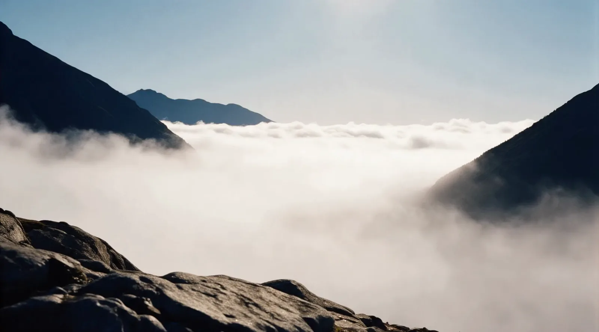

Memories
Bad Ragaz. Duas estrelas Michelin.
Não é mais um lugar que a gente olha em foto.
É para onde nós vamos.
Quatro lugares, e nenhum deles é uma cidade grande.
A Suíça que interessa começa cedo, quando o vale ainda está na sombra e a primeira luz pega só a parede de rocha lá em cima. Grindelwald fica aos pés da face norte do Eiger. Interlaken fica entre dois lagos. Lucerna tem ponte medieval, lago e montanha no mesmo horizonte. Montreux é a Riviera Suíça, à beira do Léman.


Quatro mesas, de uma cozinha de duas estrelas a um fondue que existe desde 1849.
Bad Ragaz. Duas estrelas Michelin.

Gstaad. Uma estrela Michelin.

Schilthorn. 2.970 m. Restaurante giratório.

Genebra. Aberto desde 1849.
Reservas de alta temporada saem com três a seis meses de antecedência.
Ler sobre as mesas
O Omnia não tem televisão nos quartos. É de propósito.
A janela de parede inteira com o Matterhorn é o único entretenimento que a casa promete. Ele fica numa rocha acima de Zermatt e só se chega por um elevador escavado na pedra. Zermatt inteira não tem carro a motor, o que cria um silêncio impossível em qualquer outro resort alpino.
Mais da metade do país é montanha, e a rede de trem é a mais densa do mundo. As duas coisas juntas são o motivo de a Suíça ser percorrível: dá para dormir num vale e almoçar a três mil metros no mesmo dia, sem alugar carro. O Swiss Travel Pass cobre trens, ônibus e barcos.
No último dia a gente sobe cedo, antes da neblina levantar.

Cada lugar, cada mesa e cada quarto desta página tem uma página só dele, com a história inteira e as dicas que valem a pena.